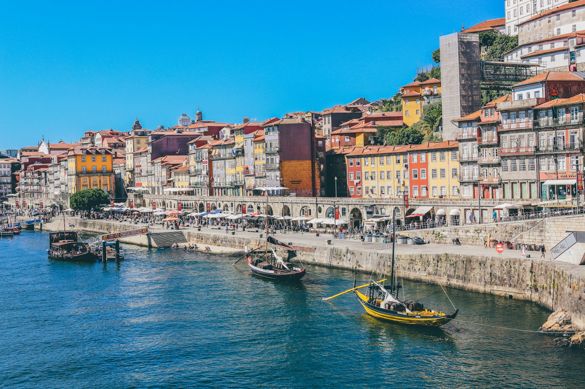
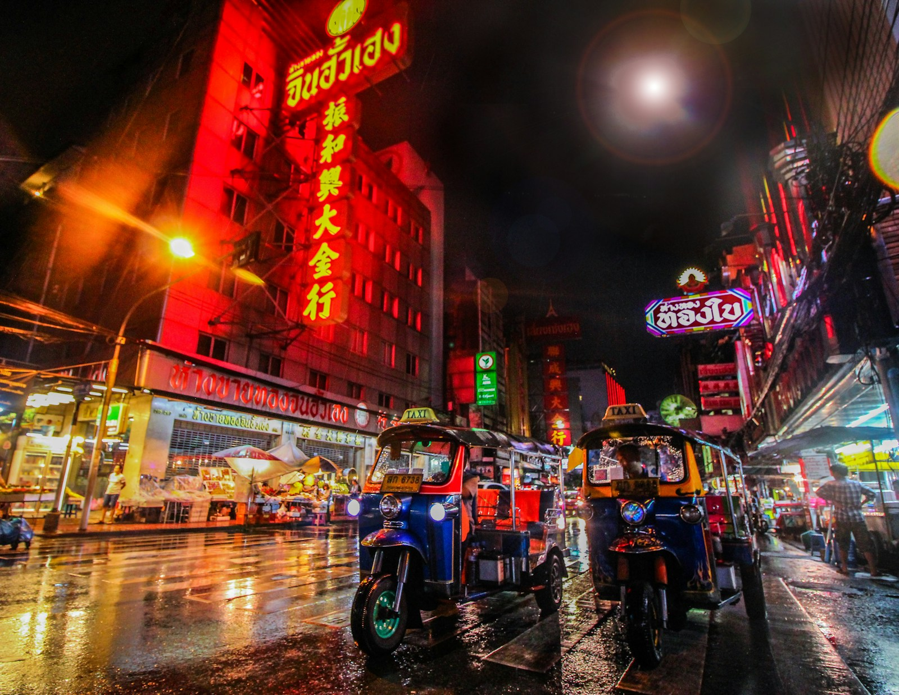

Antes de comprar
Compara el precio total, los aeropuertos y las condiciones de cambio. Revisa qué incluye cada tarifa antes de elegir.
MENOS DUDAS. MÁS MUNDO.
Volar por primera vez, entender una escala o hacer bien la maleta. Aprende lo esencial y disfruta el camino.
Quiero aprender a viajar ↗01 / TU PRIMER DESPEGUE
No necesitas conocer todos los aeropuertos. Solo entender los pasos de tu próximo viaje.
Compara el precio total, los aeropuertos y las condiciones de cambio. Revisa qué incluye cada tarifa antes de elegir.
Confirma tus documentos, prepara el equipaje y revisa el check-in. Consulta con tu aerolínea la hora recomendada de llegada.
Ubica tu terminal, entrega la maleta si corresponde y pasa los controles. Consulta las pantallas: la puerta puede cambiar.
Identifica tu asiento, guarda el equipaje y sigue las indicaciones de la tripulación. Al llegar, busca las señales de salida o conexión.
02 / DECISIONES QUE HACEN LA DIFERENCIA
Elige tu prioridad y descubre qué conviene revisar. No siempre gana el vuelo más barato.
¿QUÉ ES LO MÁS IMPORTANTE PARA TI?
Encuentra tu próxima inspiración ↗Orientación general. No mostramos tarifas ni disponibilidad de vuelos.
03 / ELIGE TU PRÓXIMA HISTORIA
Cuatro destinos, cuatro formas de mirar el mundo. Abre cada guía y empieza a imaginar tu viaje.
Donde el futuro se encuentra con la tradición.
Historia en cada esquina. Sin ninguna prisa.

Colinas, azulejos y tardes junto al río.

Una ciudad para despertar todos tus sentidos.
04 / LO ESENCIAL, CONTIGO
Marca lo que ya preparaste. Tu lista se guarda en este navegador si el almacenamiento está disponible.
0 de 6 preparados
05 / RESOLVAMOS ESAS DUDAS
El check-in confirma tu registro para el vuelo y permite obtener el pase de abordar. El embarque es el momento de entrar al avión por la puerta asignada. Revisa los plazos de ambos con tu aerolínea.
Depende de la tarifa y de la aerolínea. Artículo personal, maleta de cabina y equipaje de bodega son conceptos diferentes. Revisa los tres antes de pagar.
Comprueba si los vuelos están en una sola reserva, si debes recoger el equipaje y si cambiarás de terminal o aeropuerto. Confirma también los requisitos de tránsito y el tiempo disponible para conectar.
Depende de tu nacionalidad, edad, destino y países de tránsito. Verifica los requisitos vigentes en las fuentes oficiales del destino y con la aerolínea antes de reservar.
Rumbo es una guía educativa independiente. No vende tiquetes, no procesa pagos y no representa a una aerolínea. Su objetivo es ayudarte a preparar mejor tu viaje.
LA PRÓXIMA HISTORIA ES TUYA